Data Analytics and Visualisation
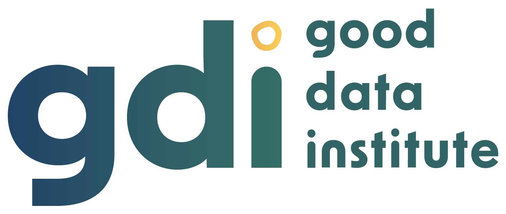
Vivek Katial
Good Data Institute
2024-02-05
Introduction
Slides
https://vivekkatial.github.io/vk-presentations/#/
About Me
- Vivek Katial (vivek@gooddatainstitute.com)
- Co-founder and Executive Director @ Good Data Institute
- Data & Founding Team @ Multitudes
- PhD Candidate @ Unimelb (Optimisation on Quantum Computers)
- Visiting PhD Researcher @ NASA Jet Propulsion lab
About Me
- I love traveling with my partner and trying new types of food
- Doing angels landing at Zion National Park (Utah)
Who is the Good Data Institute?
- We are nonprofit that empowers other nonprofits and social enterprises to leverage data for social impact.
- We build data capabilities through our volunteer community by working on data projects for the social sector
- We are a global community of 150+ data nerds
Who is the Good Data Institute?
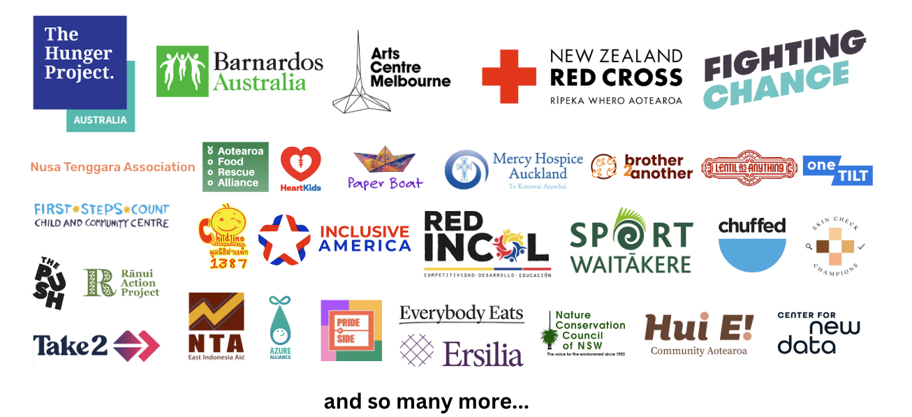
Our Impact
- 75+ Data Projects
- 50+ Nonprofit Partners
- 150+ Data Nerds
- 10+ Countries
- 2500+ Volunteer Hours
Today’s Agenda
- Importance of Data Analytics and Visualisation
- Key Tools for Nonprofits
- Data Ethics and Algorithmic Bias
- Case studies
- Best Practices in Data Modeling and Visualisation
- Q&A
Importance of Data Analytics and Visualisation
Data Analytics
What is data analytics
- Who has heard of ETL?
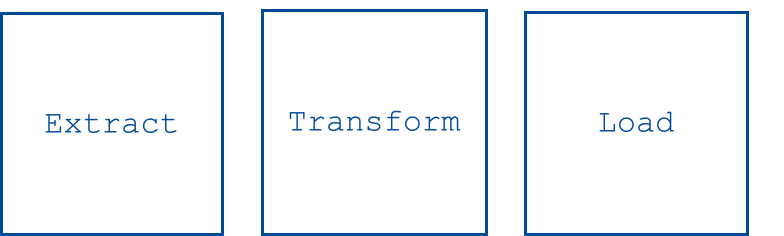
What is data analytics (Extraction)?
- Extraction → Data Collection
- Gathering data from multiple sources
- Application / website data
- APIs
- Live datafeeds (e.g. forms, real time data from sensors)
- Spreadsheet or CSV files
- Needs to be robust, reliable and scalable
What is data analytics (Transform)?
- Transformation → Data Cleaning + Enrichment and Aggregation
- Cleaning – Removing missing values, duplicates, and outliers, checking for data consistency
- Enrichment – Adding contextual information to the data; e.g. geocoding, demographic data
- Aggregation – Creating summaries of the data that can be used for analysis or shared with stakeholders
What is data analytics (Load)?
- Loading → Data Storage, Governance and Security
- Storage – Storing data in a secure and accessible way
- Governance – Ensuring data is used ethically and responsibly
- Security – Protecting data from unauthorized access or misuse
Data Visualisation
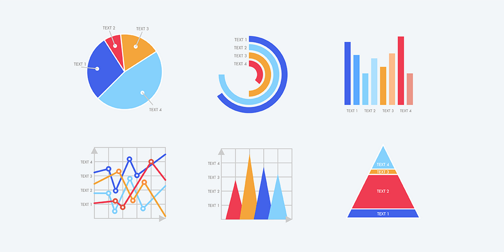
Data Visualisation
Data Visualisation → Communicating insights truthfully and with beauty
Truthfully – Representing data accurately and without bias; avoiding misleading visualizations
Beauty – Making data engaging, emphasize key points, and tell a story. Provide context and make it easy to understand

Example - Climate & Conflict
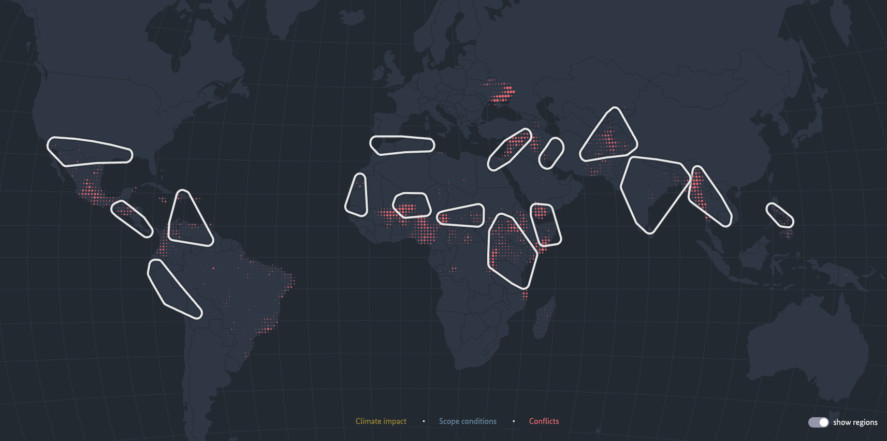
Example - Climate & Conflict
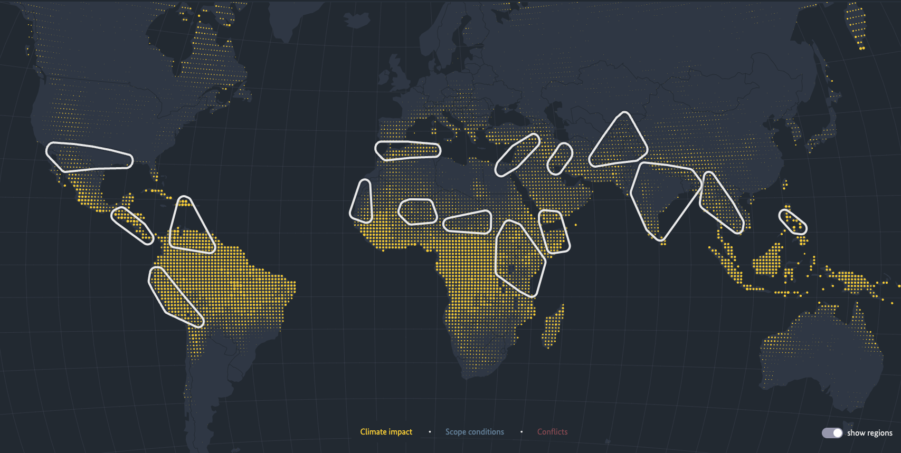
Example - Climate & Conflict
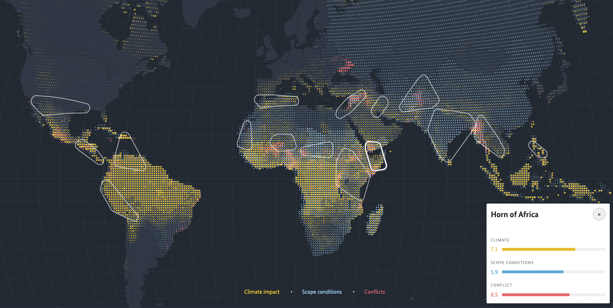
Key Tools for Nonprofits
What tools do you use?
- Poll: What tools do you use for data analytics and visualisation?
- Microsoft Excel
- Google Sheets
- R and Python
- Looker Studio
- Tableau
- Power BI
- Custom Dashboards
Tools and Technologies
- Basic Tools (Google Sheets, Microsoft Excel)
- Looker Studio
- Tableau Nonprofit Program
- Microsoft Power BI
- Free and Open Source Tools (R, Python libraries)
- Custom Dashboards and Reports from Salesforce, etc.
How to Choose the Right Tool
- Where is your data stored already?
- What are your data visualization needs?
- What is your budget and technical capacity?
Pros and Cons of Different Tools
- Microsoft Excel and Google Sheets: Easy to use and widely available, but limited features and not scalable or reliable/reproducible
- R and Python: Highly customizable, but require coding skills and technical expertise
- Looker Studio: Easy to use, but limited customization
- Tableau and Power BI: Powerful features, but can be expensive
- Custom Dashboards via ERPs: Tailored to your needs, but require development resources
Data Ethics and Algorithmic Bias
What is Data Ethics and Algorithmic Bias?
- Data ethics refers to the moral and ethical implications of data collection, analysis, and use.
- Algorithmic bias refers to the ability of algorithms to systematically and repeatedly produce outcomes that benefit one particular group over another
- Already many examples in society where algorithms have harmed marginalised groups
Trivial Example

- Predictions on the image of the Western bride included labels such as “bride”, “wedding”, “ceremony”
- For the woman wearing a traditional Indian wedding dress, the predicted labels were “costume”, “performing arts”, “event
More Harmful Example
- Evaluation of a model that uses facial recognition deployed by large technology companies 1
More Harmful Example
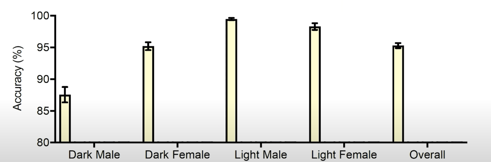
\[ P(\text{Dark}) \lt P(\text{Light}) \]
More Harmful Example
\[ P(\text{Dark} \cap \text{Male}) \lt P(\text{Dark} \cap \text{Female}) \lt \\ P(\text{Light} \cap \text{Female}) \lt P(\text{Light} \cap \text{Male}) \]
More Harmful Example
- What happens when you try and use a de-biasing parameter \(\alpha\) to reduce that bias.
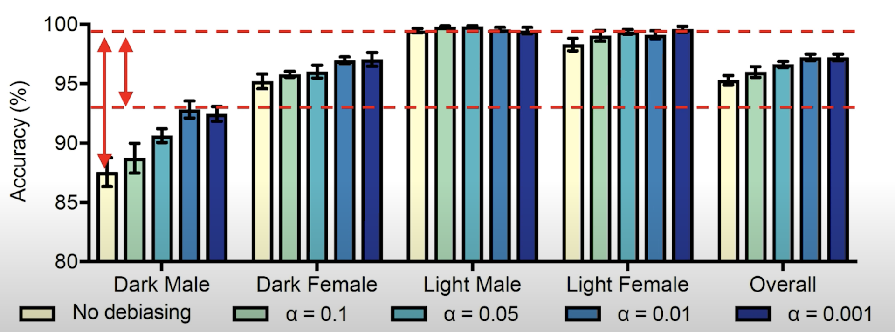
How to get started on data ethics!
- Create some data principles
- This is a well-studied field. Get buy-in from leadership using existing research
- Conduct a bad actor exercise
- Make data labelling fun and diverse
- Recognize that humans are the ones who create algorithms, so we also recognize the importance of the broader culture and environment we create and operate in.
- Commit to learning more!
- Weapons of Maths Destruction by Cathy O’Neil
- Data Feminism by Catherine D’Ignazio and Lauren F. Klein
Example 1
Caring Kids Australia
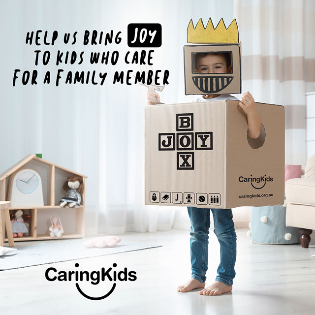
Caring Kids Australia
- Mission: To provide toy boxes to kids who support their family members facing chronic illnesses or disabilities
- Data Challenge: They had a database of all the kids they’ve helped and they had addresses for all of them. They wanted to know where all the kids were located and how they could better serve them.
Caring Kids Australia
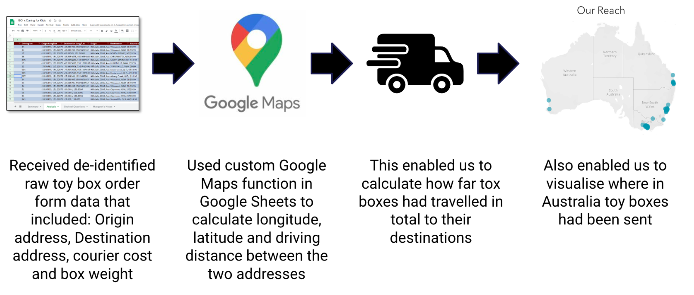
Caring Kids Australia
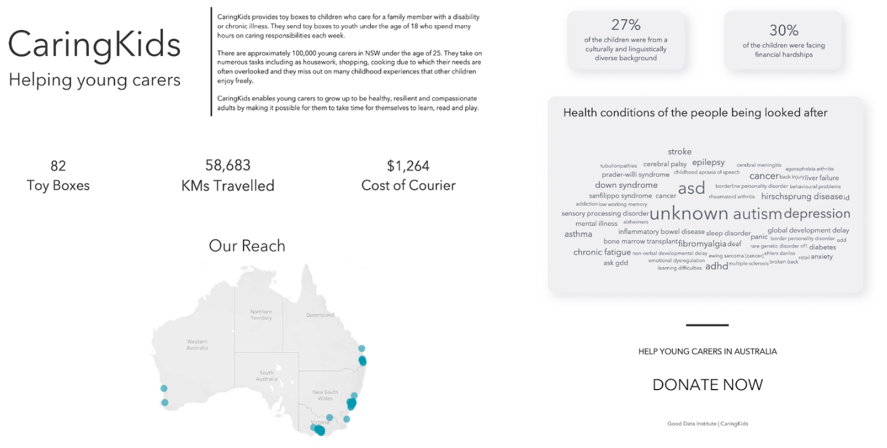
Example 2
Where are all GDI the projects located?
- Data Source: Good Data Institute Project Database
Where are all the projects located?
Where are all the projects located?
- Write a basic
SQLquery to download all project data and write to csv
Where are all the projects located?
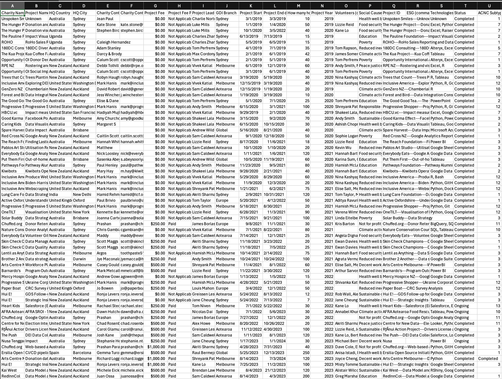Real Example (using R)
- Great! Now lets look at one row of the data
Real Example (using R)
Rows: 1
Columns: 6
$ project_id <int> 29
$ project_name <chr> "Biden-Harris Transition DEI"
$ charity_name <chr> "Inclusive America"
$ hq_country <chr> "United States"
$ hq_city <chr> "Washington DC"
$ gdi_branch <chr> "Melbourne"Real Example (using R)
# A tibble: 9 × 2
hq_country n
<chr> <int>
1 Australia 40
2 India 1
3 New Zealand 20
4 Spain 2
5 Taiwan 1
6 Thailand 1
7 Uganda 2
8 United Kingdom 2
9 United States 11Real Example (using R)
- What do you think of this visualisation?
Real Example (using R)
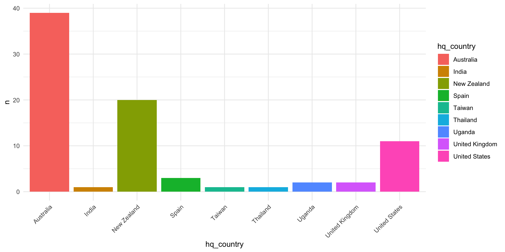
Proper Data Visualisation
Proper Data Visualisation
Proper Data Visualisation
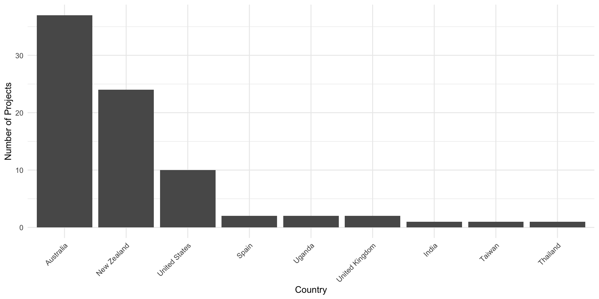Comparison
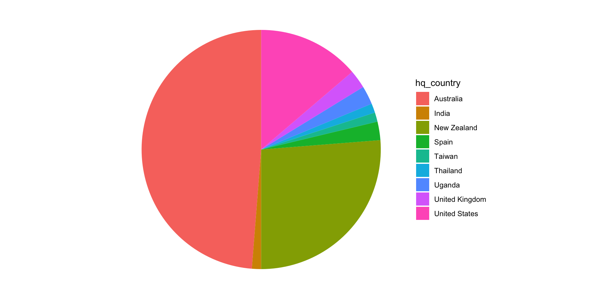
- Pie Chart 🥧
- Hard to distinguish between the parts of a circle
- So many colors, hard to process
- Not the best choice for this data
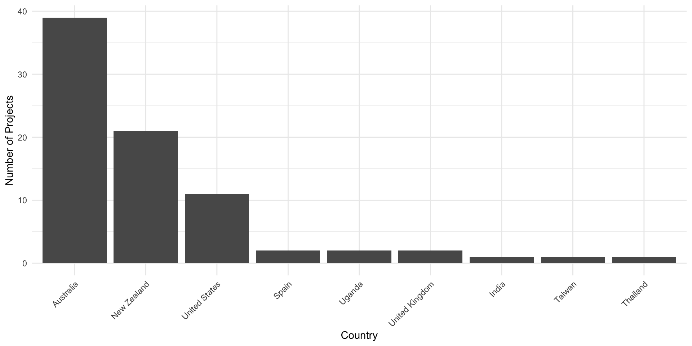
- Bar Chart 📊
- Easier to read and understand
- Reordered by number of projects
- Clear labels
Question: Whats missing for both?
More advanced visualisation
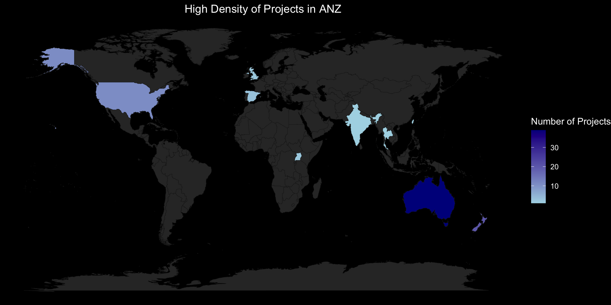Example 3
Pipeline Dreams with

Low income countries produce less than
<5%
of the world’s scientific research
Scientific Method
Design
Test
Evaluate
Example Malaria
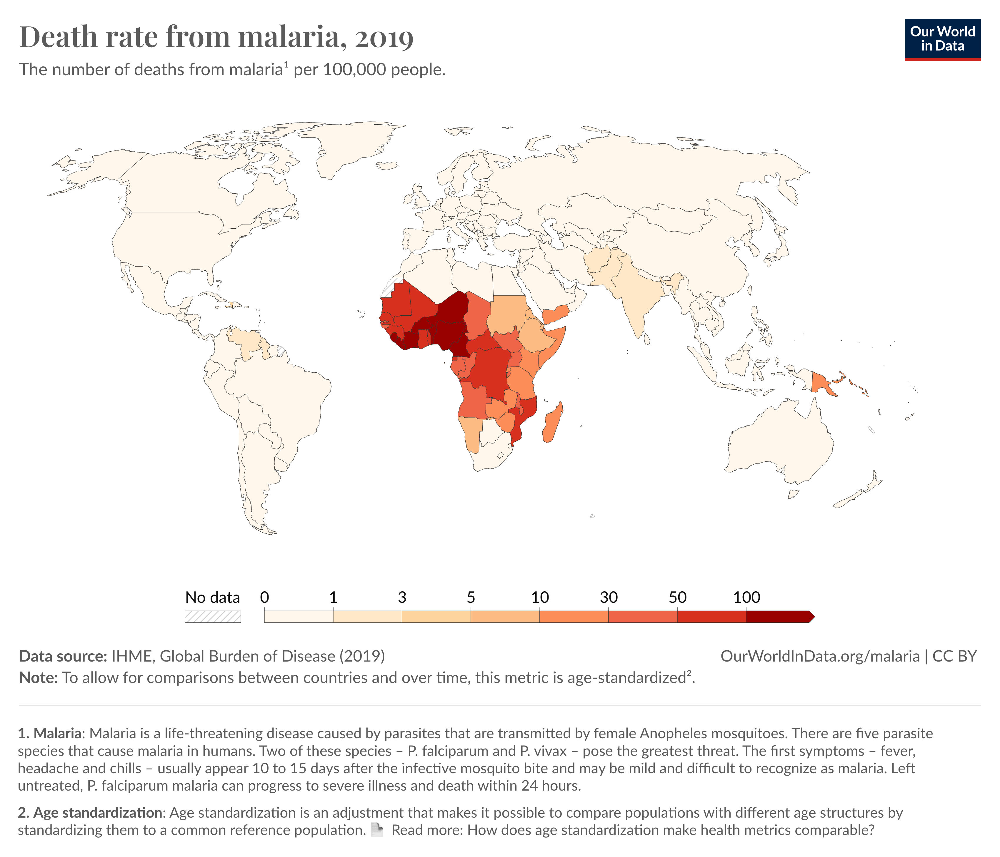AI can help and accelerate research
- AI can help to accelerate research and development in low income countries
- Accelerate novel drug discovery in low-income countries by providing scientists in these areas with cutting-edge AI models
- They presently have 100+ models, each tailored for a unique aspect of drug discovery.
Problem
- Limited compute capacity available to researchers in the Global South
- We want to build a database of pre-calculated ML predictions for commonly used molecules (reference library of 2M)
- We should be able to return these predictions over the internet within seconds (not minutes)
Solution
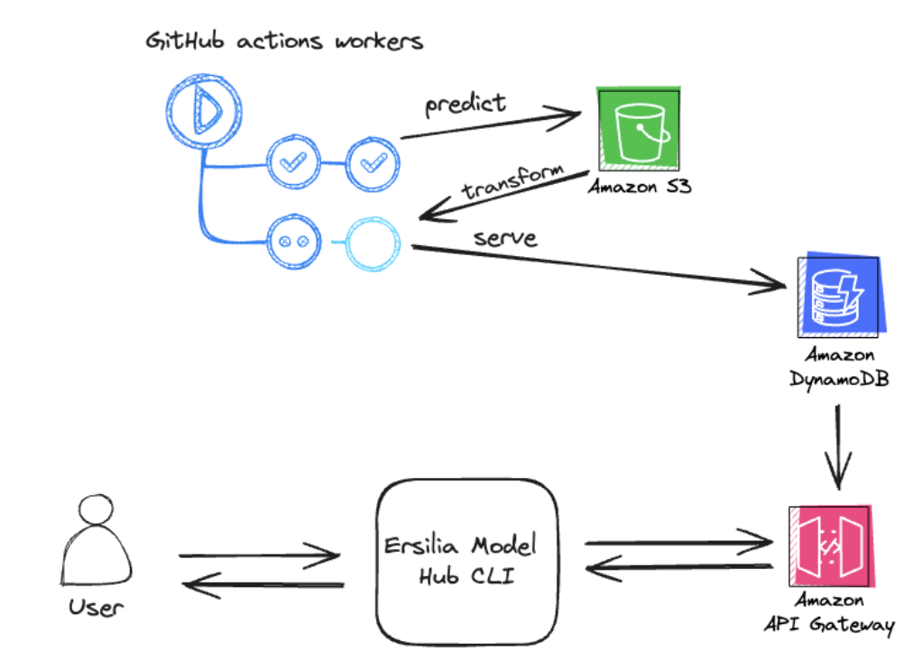
Solution
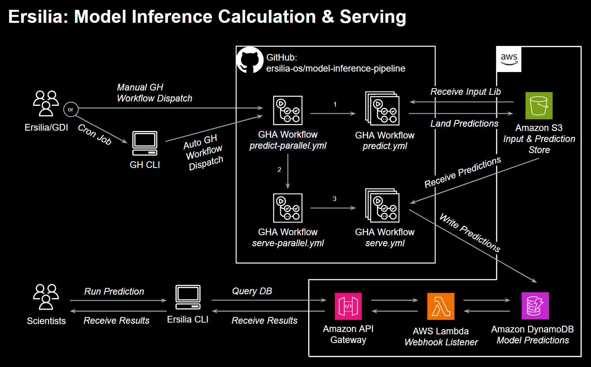
Lessons Learned
- Outcome: We can now return predictions in under 1 second
- Technical domains take time to understand
- Using an evolving architecture diagram can facilitate engineering work
infrastructure_as_code.(Terraform) == Good
Wrapping up
Best Practices in Data Analytics and Visualisation
- Start with a clear goal
- Understand your data
- Choose the right tool(s)
- If you can write SQL or use Excel, you can write R or Python
- Use scripts to automate repetitive tasks and invest in version control (e.g Github)
- Use the right visualisation for your data
- Avoid pie charts
- Use color and size to draw attention to key points
- Make it easy to understand
- Enhance with exogenous datasets (e.g. geocoding, census data)
- Never forget Data Ethics and Algorithmic Bias
Q&A
Follow us
Map code
library(maps)
# Map data preparation with country name adjustments
d_projects <- d_projects %>%
mutate(hq_country = case_when(
hq_country == "United States" ~ "USA",
hq_country == "United Kingdom" ~ "UK",
TRUE ~ hq_country
))
# Load world map data
world_map <- map_data("world")
# Join your project data and prepare the map data
map_data <- world_map %>%
left_join(d_projects %>%
count(hq_country, name = "n_projects"), by = c("region" = "hq_country")) %>%
replace_na(list(n_projects = NA))
# Plotting the map
ggplot(map_data, aes(x = long, y = lat, group = group, fill = n_projects)) +
geom_polygon(color = "#1C1C1C", size = 0.15) + # Adjust border color for better visibility on dark background
scale_fill_gradient(low = "lightblue", high = "darkblue", name = "Number of Projects", na.value = "#313131") +
labs(title = "Number of Projects by Headquarters Country", x = "", y = "") +
theme_void() +
theme(
text = element_text(color = "white"), # Changes text color to white
plot.background = element_rect(fill = "black", color = NA), # Dark plot background
panel.background = element_rect(fill = "black", color = NA), # Dark panel background
panel.grid.major = element_blank(), # Adjust grid color and size
panel.grid.minor = element_blank(), # No minor grid
plot.title = element_text(color = "white", hjust = 0.5), # Title in white and centered
axis.text = element_blank(), # Remove axis text
axis.ticks = element_blank(), # Remove axis ticks
legend.background = element_rect(fill = "black", color = NA), # Dark legend background
legend.text = element_text(color = "white") # White legend text
)